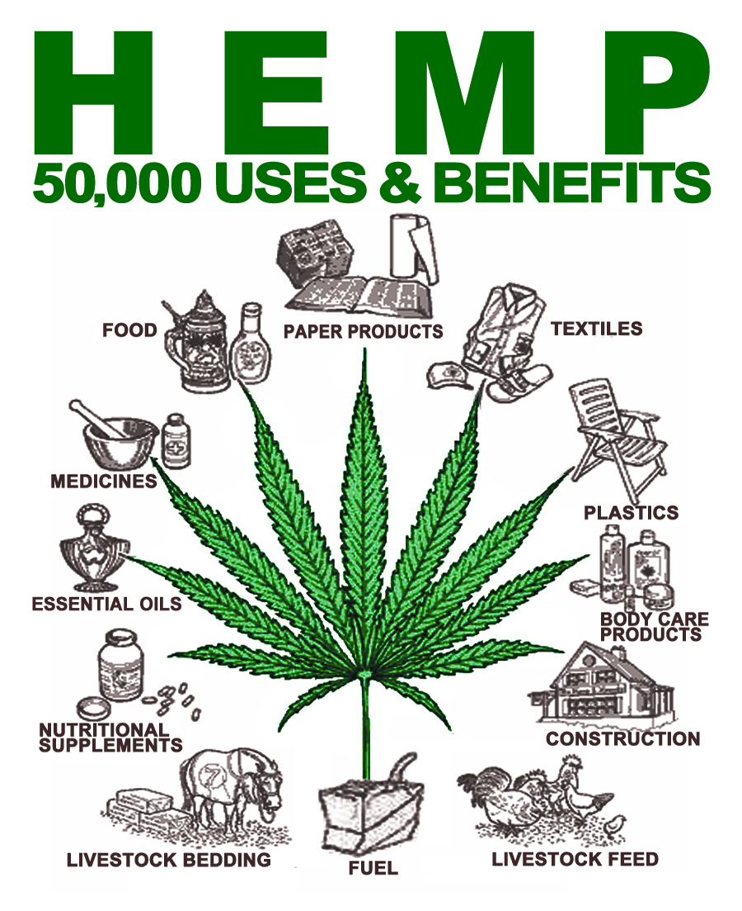
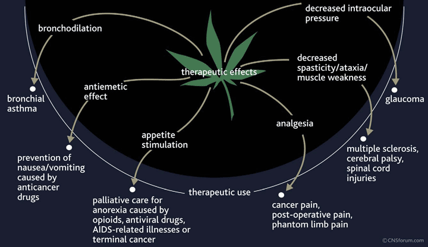
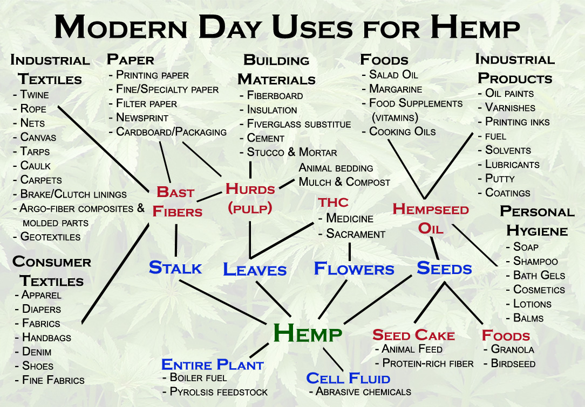
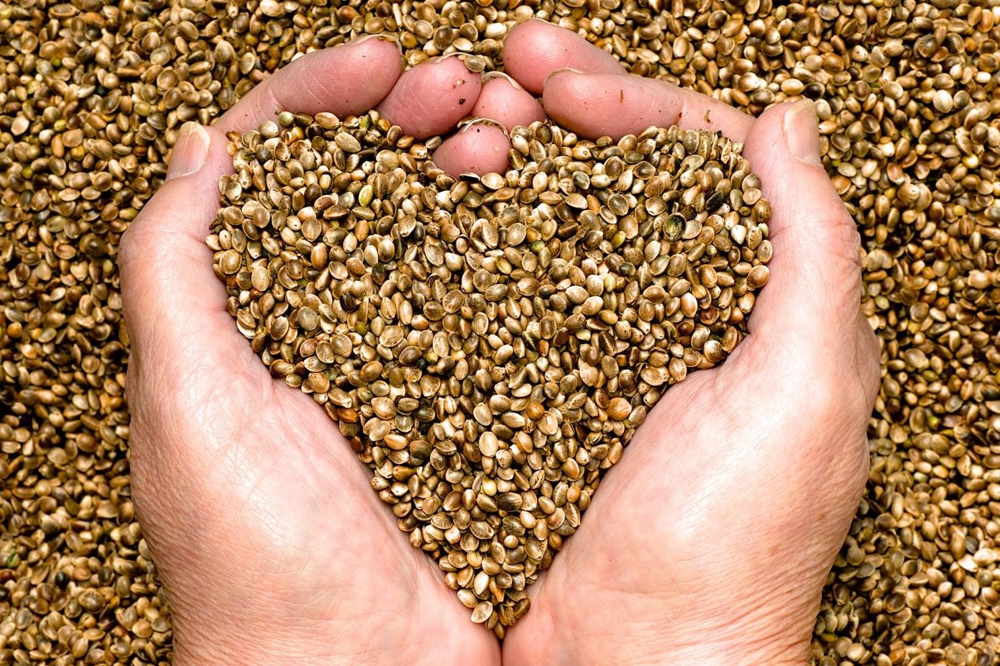

The infinite wonder of hemp
-
History
Hemp or industrial hemp (from Old English hænep), typically found in the northern hemisphere, is a variety of the Cannabis sativa plant species that is grown specifically for the industrial uses of its derived products. It is one of the fastest growing plants and was one of the first plants to be spun into usable fiber 10,000 years ago. It can be refined into a variety of commercial items including paper, textiles, clothing, biodegradable plastics, paint, insulation, biofuel, food, and animal feed.
Although cannabis as a drug and industrial hemp are both members of the species Cannabis sativa and contain the psychoactive component tetrahydrocannabinol (THC), they are distinct strains with unique biochemical compositions and uses.[6] Hemp has lower concentrations of THC and higher concentrations of cannabidiol (CBD), which decreases or eliminates its psychoactive effects.[6] The legality of industrial hemp varies widely between countries. Some governments regulate the concentration of THC and permit hemp that's bred with an especially low THC content.
Another possible source of origin is Assyrian qunnabu, which was the name for a source of oil, fiber, and medicine in the 1st millennium BC. Cognates of hemp in other Germanic languages, include Dutch hennep, Danish and Norwegian, hamp; German, hanf; and Swedish, hampa.
-
uses
Hemp is used to make a variety of commercial and industrial products including rope, clothes, food, paper, textiles, plastics, insulation and biofuel. The bast fibers can be used to make textiles that are 100% hemp, but they are commonly blended with other organic fibers such as flax, cotton or silk, to make woven fabrics for apparel and furnishings. The inner two fibers of the plant are more woody and typically have industrial applications, such as mulch, animal bedding and litter. When oxidized (commonly referred to as "drying"), hemp oil from the seeds becomes solid and can be used in the manufacture of oil-based paints, in creams as a moisturizing agent, for cooking, and in plastics.
Concrete-like blocks made with hemp and lime have been used as an insulating material for construction. Such blocks are not strong enough to be used for structural elements; they must be supported by a brick, wood, or steel frame. However hemp fibres are extremely strong and durable, and have been shown to be usable as a replacement for wood for many jobs including creating very durable and breathable homes.
A mixture of fiberglass, hemp fiber, kenaf, and flax has been used since 2002 to make composite panels for automobiles. The choice of which bast fiber to use is primarily based on cost and availability. Various car makers are beginning to use hemp in their cars, including Audi, BMW, Ford, GM, Chrysler, Honda, Iveco, Lotus, Mercedes, Mitsubishi, Porsche, Saturn, Volkswagen and Volvo. For example, the Lotus Eco Elise and the Mercedes C-Class both contain hemp (up to 20 kg in each car in the case of the latter).
Before the industrialisation of the paper production the most common fibre source was recycled fibres from used textiles, called rags. The rags were from hemp, linen and cotton.[38] A process for removing printing inks from recycled paper was invented by German jurist Justus Claproth in 1774.[38] Today this method is called deinking. It was not until the introduction of wood pulp in 1843 that paper production was not dependent on recycled materials from ragpickers.
-
Biorefining
PureHemp has secured global technology licensing rights to convert industrial hemp into hemp-based products. PureVision Technology, Inc. (“PureVision”) based in Ft. Lupton, Colorado, has developed and patented biorefining technologies to rapidly convert non-food biomass such as corn stover, wheat straw, grasses, wood and hemp into biobased products. PureHemp has demonstrated the unique capabilities of its refining technology that deconstructs hemp into its fundamental components that then become intermediate materials including:
Pulp, one of the products exiting the CCR, is made from the cellulose and hemicellulose fractions of the hemp stalks. Pulp is used for making a wide variety of products including paper products, alpha cellulose, dissolving pulps, composites and building products.
Lignin, which makes up about 20% of hemp stalks, is the “glue” that protects the fibers. PureHemp is able to fractionate lignin from hemp stalks, which can then be used as a raw material to make many products, including chemicals and plastics.
Sugars from the cellulose and hemicellulose fractions of hemp, primarily xylose and glucose, can be used to produce products including sweeteners, beverages, chemicals and plastics.
Oils can be produced from two sources from the hemp plant. At a PureHemp refinery, hemp seeds and flowers will be converted into hemp oils, including cannabidiol (CBD) oil, now being used by health and wellness practitioners. -
cannabis-Legal
Confused about the legal status of cannabis and cannabis-derived products? You’re not alone.
To understand the benefits and contradictory legal status of the incredible cannabis plant one has to wade through a myriad of misconstrued biology and science, inconsistent federal and state laws, morality- and prejudice-based public policies and Big Pharma lobbied federal criminal codes. With some form of cannabis legalization now in effect in over half of the states, what is one to think since marijuana remains illegal under federal law?Cannabis is a genus of flowering plants that includes three species: sativa, indica and ruderalis.
For thousands of years our ancestors have used the cannabis plant for fiber, food and medicine. Selective breeding of this extremely adaptable plant has produced different cannabis varieties. In modern history, so-called industrial or agricultural hemp strains have been bred with minimal or no tetrahydrocannabinol (THC) to satisfy modern day narcotics laws prohibiting this psychoactive component.The Cannabis plant is unique among the plant kingdom with over 100 different cannabinoids, chemical compounds that are processed by specialized receptors in our bodies.
The two most studied cannabinoids are THC and cannabidiol (CBD). Marijuana strains have been bred to produce maximum amounts of THC. Under federal law, THC is illegal. CBD is considered legal in all 50 states because it isn’t psychoactive. However, even if a CBD product containing THC is or is not be legal in a specific state, it remains technically illegal under federal law.The word marijuana is a recently invented name for Cannabis, circa the early 20th century, to emphasize racial stereotypes of users.
“Marijuana is the most violence-causing drug in the history of mankind,” according to Harry Anslinger, director of the Federal Bureau of Narcotics from 1930 to 1962. During congressional testimony he is quoted as saying, “Most marijuana smokers are Negroes, Hispanics, Filipinos and entertainers. Their satanic music, jazz and swing, result from marijuana usage." Anslinger’s predisposition against Cannabis succeeded in 1937 when Congress passed the Marihuana Tax Act, which prohibited Cannabis in the United States.As we begin to emerge from Cannabis prohibition, “slicing and dicing” the miraculous Cannabis plant is nearly complete.
Law enforcement seeking to feed the prison system, moralists against “the pursuit of happiness”, the pharmaceutical industry opposing competition from a natural medicine, and of course state and municipal tax collectors seeking their slice of the Cannabis pie – all of these special interests are creating a false perception.
Call it whatever you want, it’s all the same plant!
All above section used with permission: Carl Lehrburger is an author and co-founder of PureHemp Technology, processors of the whole hemp plant. For more information on “What’s the Difference?”, contact info (@) purehemptech.com. Our affiliated company, Pure Kind Botanicals™ is extracting cannabinoids from agricultural hemp for consumer use. You are invited to visit www.purekindbotanicals.com to check out their full-spectrum cannabinoid oil and CBD isolate products.
every part of the plant is used for good
Simply there is roughly three main parts the Hemp is refined down to and we focus on the xylose that is then converted to xylitol. The cool thing is we can make all kinds of different sugars. One unique thing (There are many) of PureHemp Tech's CCR refinery is that fact they use every bit of the plant; part goes to textile industries, other parts to the medicine industry, and of course part to us:)
-

- 
- 
- 
- 